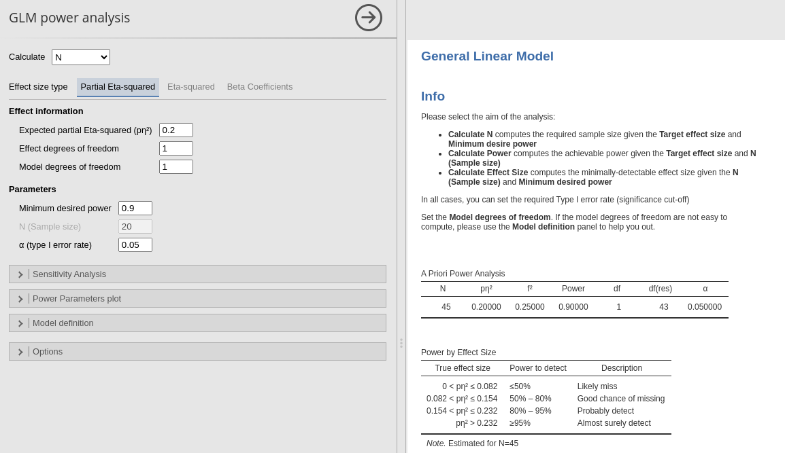
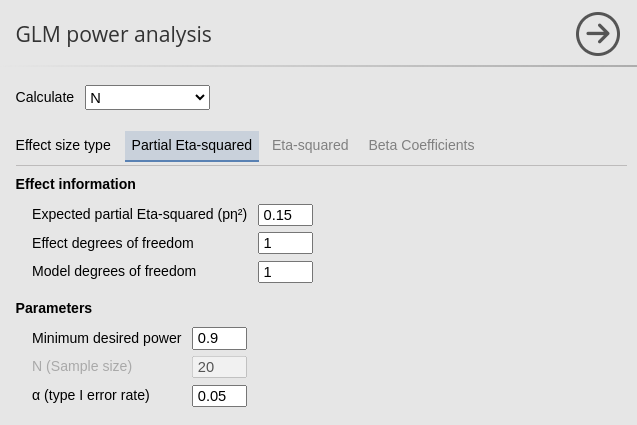
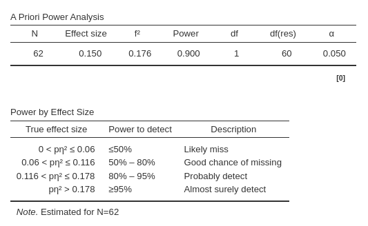
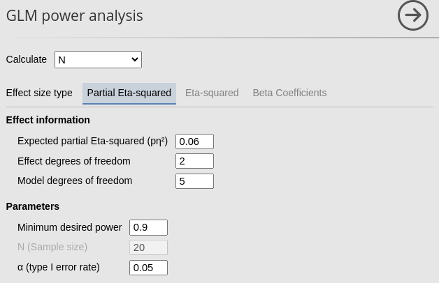
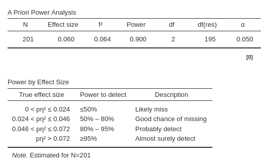

Generali Linear Model
Power Analysis
PAMLj version ≥ 0.1.0

GLM power analysis allows for computing power parameters
for testing a wide range of effect across several different designs. The
initial step is to determine the objective of the analysis (
aim ). Further details regarding different objectives can be
found in the Info results field.

The second step is to decide what type of effect size we want to employ.
Partial Eta-Squared : valuable for any application of the GLM, such as ANOVA, ANCOVA, regression, for individual effects and overall test (\(R^2\)).
Eta-Squared : valuable for any application of the GLM, such as ANOVA, ANCOVA, regression, for individual effects and blocks of effects (\(\Delta R^2\)).
Beta coefficients : valuable in particular for regression for individual effects.
We begin with the first type of effect size.
Partial Eta-squared
The partial eta-squared \(p\eta^2\) is one of the most commonly used effect size index with the GLM. It is the ratio between the variance explained by an effect (\(\sigma_x^2\)) and the variance not explained by any other effect is the model (\(\sigma_x^2+\sigma^2\), where \(\sigma^2\) is the residual variance). Formally: \(\sigma_x^2/(\sigma_x^2+\sigma^2)\). It is usually reported in published papers and can be computed with any available statistical software.
Partial Eta-squared is used in power analysis for its close connection to the F-test. The F-test natural effect size is \(f^2\) (Cohen 1988), which can be computed as \(f^2=p\eta^2/(1-p\eta^2)\). The partial Eta-squared can be associated to continuous or categorical independent variables, or to any other term in the model, such as interactions or polynomial effects. The degrees of freedom ( df) associated with its test are always 1 for effects involving continuous variables, \(K-1\) for categorical variables with \(K\) levels (groups).
When we have our expected Partial Eta-squared (but see below for more details), we can use it to compute the other power parameters, depending on the aim of the analysis.
Aim: N (Required sample size)
When estimating the required sample size for planned research, we want to know what is the smallest sample that guarantees a significant result with probability equal to \(1-\beta=power\), given the expected effect size \(p\eta^2\). That is, the minimum N such that we achieve the desired power for a test of the expected effect size.
Let’s consider a scenario where we aim to estimate the required
sample size (N) for a planned research project. Assuming we have a
single continuous independent variable with an expected Partial
Eta-squared of 0.15 evaluated at α = 0.05. We aim for a power of 0.90.
Because the independent variable is continuous, it’s test will have 1
df. Because there is only one independent variable, the
Model degrees of freedom will be 1 as well (see below for
more about computing df in complex models).
We can simply input these parameters into PAMLj.
 
From the results table A priori power analysis we can
see that the required N is 62, so we need 62 cases to achieve a power of
.90 given an expected \(p\eta^2=.15\).The tables reports all power
parameters, all but one are input by the user, and the required one
estimated by the module.
The second table we get is the Power by Effect Size
table, which informs us on the different power levels associated with
different possible effect sizes. Based on the estimate \(N=62\), we should expected a very low power
(\(1-\beta<.5\)) should the actual
population effect size be less than .06. A power of \(1-\beta<\) between .5 and .80 should the
expected effect size be between .06 and .116. A power between .80 and
.95 is to be expected if our population effect size is between .116 and
.178, whereas a power greater than .95 can be expected if the population
correlation is larger than .178.
Assume now we have a 2 X 3 design, and we are focusing on the interaction effect. Assume the expected Partial Eta-squared is .06. The interaction effect test has \((2-1)(3-1)=2\) degrees of freedom, whereas the overall model has \(3*2-1=5\) df. We can plug these values in the interface and get the required N.
 
From the results table A priori power analysis we can
see that the required N is 201, so we need 201 cases to achieve a power
of .90 given an expected \(p\eta^2=.06\).
These results are identical to the ones one would obtain in R using
pwr package or emplying G*Power.
See Rosetta: GLM required N for
validation.
Sensitivity analysis
Sensitivity analysis means exploring different scenarios. Power contour plot visualizes the power from low (green) to high (yellow) as a function of possible sample sizes (x-axis) and effect (correlation) sizes.

In the power contour plot, we see the solid line representing the combinations of Sample Size (N) and effect size that yields the required power (in the example .90). So we know how the power will change had we underestimated the effect size (go down in y-axis) or underestimated the sample size (go left on the x-axis).
The second plot we can ask is the Power curve by N . It
portraits how the power (y-axis) chances as one increases the sample
size (x-axis).

The solid line portraits the change in power as we increases sample size given the effect size (\(r=.2\)) and the critical alpha (\(\alpha=.05\)). In this example, for instance, we can see that if we were not able to collect more than 150 cases, our expected power will not be more than .70 (to be optimistic).
Aim: Power (posthoc power)
Post-hoc power analysis serves to evaluate the likelihood of obtaining statistically significant results after conducting research, particularly when a pre-hoc (a priori) analysis was not performed. For instance, let’s consider a scenario where a research study involves 25 participants, resulting in a Pearson correlation coefficient of 0.35, which is found to be statistically significant. In this context, post-hoc power analysis assesses the probability of consistently obtaining significant results if the research were to be replicated multiple times, drawing from the same population.
So, let’s fill in the field for Calculate: Power. The
effect size is .35, N (Sample size) is 25. The expected power is under
the column power.

The expected power, calculated as \(1−\beta=.414\), indicates that it’s less likely to replicate the results than to obtain significant results when drawing from the same population and employing the same sample size. If there are concerns about the lack of replication, increasing the sample size (N) would be recommended (Schönbrodt and Perugini 2013).
Sensitivity analysis
Power contour plot and Power curve by N have here the same interpretation as mentioned above. However, when the aim of the analysis is to find the achieved power, one can ask for Power curve by effect size.

Here, we observe the relationship between the power of the test and the effect size. The solid curve illustrates how the power may vary across different effect sizes, given a fixed sample size (\(N=25\)). In this example, it becomes evident that in our research one can consistently (i.e. \(1-\beta > .90\)) detect a significant correlation only for correlations exceeding 0.6.
Aim: Effect size (AKA another sensitivity analysis)
In recent years, there has been a growing interest towards the minimum detectable effect size (MDES). However, there seems to be some confusion surrounding its interpretation. In a proper power analysis aimed at determining the required sample size, utilizing a minimum detectable effect size can be beneficial. To clarify, the MDES represents the smallest effect size that a study aims to detect. It involves deciding the minimum value of correlation (for example, 0.08) that would be considered meaningful. Subsequently, the sample size is determined to ensure that if the observed correlation exceeds the MDES, it would yield a statistically significant result with a specified probability (\(1-\beta=power\))
Computing Calculate: Effect size serves a different purpose—it determines the minimum effect size that can be detected as significant with a specified probability (\(1-\beta\)), given the sample size at hand. In essence, it is a post-hoc power analysis.
While this analysis may not always be necessary, it can prove useful in certain scenarios. For instance, consider a situation where only a limited sample of 40 cases was collected due to constraints such as research topic, funding, or population size. In such cases, Calculate: Effect size helps answer the question: What is the lowest effect size that would be detectable as significant with a certain probability (\(1-\beta\)) given the sample size (N=40)?
Imagine you have collected 40 cases and need to test several correlations. You can determine the lowest level of correlation that would be detectable in future studies with a probability greater than 0.90. By inputting the available information — \(N=40\), required power of 0.90 (for instance), and an alpha of 0.05 — you can obtain valuable insights.

Results show that any correlation less than .483 will be tested with a power less than .90.
Sensitivity analysis
Power contour plot and Power curve by N have here the same interpretation as mentioned above.
Aim required alpha
I feel like nobody is going to use this option. If you are, you know what you are doing so we do not need a tutorial.
Comments?
Got comments, issues or spotted a bug? Please open an issue on PAMLj at github or send me an email
’